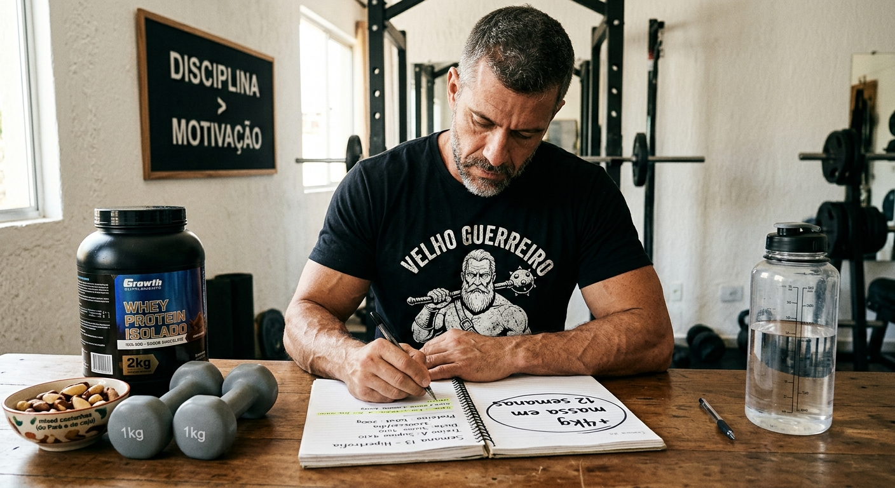

Por Que Ganhar Massa Muscular Após os 40 Anos é Questão de Sobrevivência e Como Fazer em Casa

Depois dos 40, músculo não é estética, é seguro de vida. A partir dos 35 anos você perde 1% de massa muscular por ano se não fizer nada. Aos 50, já perdeu 15% da sua força. Aos 70, não consegue levantar do sofá sozinho. Isso tem nome: sarcopenia, e é a principal causa de queda, fratura e dependência na velhice.
Eu decidi aos 42 que não ia ser mais um velho fraco. E descobri que dá para ganhar massa muscular em casa, sem academia, sem suplemento caro e sem virar frango de granja. Mas precisa entender por que seu corpo luta contra você depois dos 40 e como vencer essa luta com método simples.
1. Por Que Você DEVE Ganhar Massa Muscular Após os 40? 5 Motivos Que Ninguém Te Conta
| Motivo | O que acontece sem músculo | O que ganha com músculo |
|---|---|---|
| 1. Metabolismo | Cada década sem treino, -5% metabolismo, barriga cresce mesmo comendo igual | Cada 1kg de músculo queima +70 kcal por dia parado |
| 2. Testosterona | Menos músculo = menos receptor de testo, libido e energia caem | Treino de força aumenta testo livre em 18% em 12 semanas |
| 3. Articulação e dor | Joelho e lombar doem porque músculo não segura peso | Músculo protege joelho, quadril e coluna, dor some em 30 dias |
| 4. Açúcar e coração | Sem músculo, açúcar fica no sangue, vira diabetes tipo 2 | Músculo é maior depósito de glicose do corpo, controla diabetes |
| 5. Independência | Aos 70, 30% dos homens não levantam da cadeira sem ajuda | Homem com massa muscular vive 6 anos a mais independente |
2. Por Que é Mais Difícil Ganhar Massa Após os 40? (E Como Driblar)
- Vilão 1 - Anabolismo resistente: Depois dos 40, seu músculo responde 30% menos à proteína. Solução: 4 refeições de 35g de proteína, não 2 de 70g.
- Vilão 2 - Recuperação mais lenta: Seu músculo leva 48-72h para recuperar. Solução: treino AB 4x semana.
- Vilão 3 - Inflamação silenciosa: Estresse e sono ruim bloqueiam ganho. Solução: dormir 7h30 e treino curto de 35 min.
- Vilão 4 - Medo de comer: Sem superávit leve de 200-300 kcal, não há construção.
3. Como Ganhar Massa Muscular em Casa: Protocolo Velho Guerreiro 40+
Pilar 1 - Proteína espalhada
Meta: 1,8g a 2,0g por kg. Homem de 80kg = 160g por dia divididos em 4 refeições.
Pilar 2 - Treino de tensão, não de repetição
Segunda e Quinta: Agachamento búlgaro, flexão pés elevados, afundo, ponte glúteo. Terça e Sexta: Barra fixa, flexão diamante, remada com mochila, rosca elástico.
Pilar 3 - Sono anabólico
70% do GH é liberado entre 23h e 2h. Durma 7h30 mínimo.
4. Dieta Simples Para Ganhar Massa em Casa Sem Engordar
- Superávit inteligente: 200-300 kcal acima do gasto
- Carboidrato ao redor do treino: Banana antes, arroz + carne depois
- Gordura boa: 3 ovos, abacate, azeite
- Creatina: 5g todo dia
5. Resultado Real: O Que Esperar em 90 Dias
- 30 dias: Força sobe, dor diminui
- 60 dias: +1,5kg massa magra, -2kg gordura
- 90 dias: +2,5 a 3,5kg de músculo, postura de guerreiro
Conclusão: Músculo é Sua Aposentadoria Física
Comece amanhã: 4 ovos, agachamento búlgaro e cama às 23h. Em 14 dias seu corpo responde.
Força e disciplina.
— Velho Guerreiro